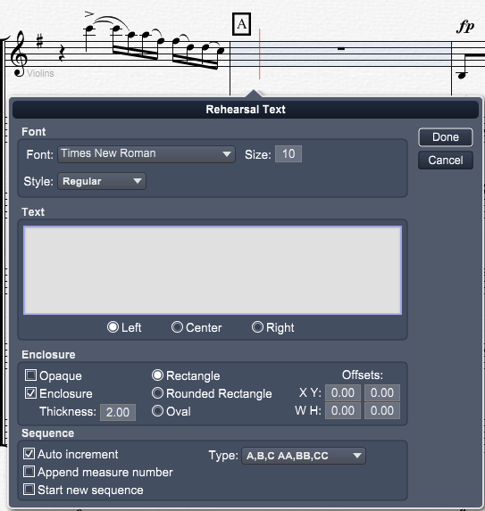

Tools Panel - Rehearsal Text
Tools Panel - Rehearsal Text
If Tools Panel is not showing click on the Score Tools button at top left of Control Bar and then click on the Text section in the header if it's not active.
You can also type "Ctrl[Cmd]-Shift-T" to go directly to the Text section.
Rehearsal text usually called rehearsal marks usually consists of letters or numbers are added using the Rehearsal Text tool.
If you choose the Auto increment setting, all rehearsal marks will appear sequentially in the score (A, B, C… AA,BB, CC... 1, 2, 3…etc.).
Rehearsal marks added this way are automatically updated as new ones are entered, moved, or deleted.
|
When you click in the score to enter Rehearsal marks or double click on existing Rehearsal mark the Rehearsal Text dialog box appears.

Font Section:
This is where you set the font typeface size and style.
Text Section:
Type in this area to enter the text and how it is justified.
Enclosure Section:
Change these setting to enclose the text. Note: To set the enclosure on any existing text in your score, right click the text and choose the type of enclosure.
If you selected the the hand written mode (Aloisen Groove in the Score Layout panel), addition hand written enclosures are provided.
Sequence Section:
Change these setting to automatically add a sequence of text or append measure numbers to the entered text.
Auto Increment - Check this to automatically increase the text for each rehearsal text in your score.
The sequence of characters is incremented based on the Type box setting. You do not need to enter any text.
The sequence will start at the first character as chosen in the Type pull down menu.
Once the end of the sequence is reached the pattern will restart as chosen in the Type pull down menu.
Append measure number - Check this to append the current displayed measure at the end of the text.
Start new sequence - Check this box the restart the sequence.
Type - Choose the character type when using the Auto increment setting.